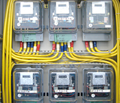

施設管理部 次長
本田 一 氏

コスト、技術力、機動力そして提案力。エネゲートさんの総合力を評価して「さんちか」と「神戸交通センタービル」の証明用電気計器（子メーター)取替え工事を依頼しています。実は、今回も約80台の取替工事を依頼させていただいたのですが、その際、エネゲートさんから新しい提案をいただきました。それは証明用電気計器（子メーター)を新規のものに取替えるのではなく、再生品と交換するというものです。
工事金額の一部はテナントさまにご負担いただきますので、コストダウンにつながる提案はありがたいものです。また、神戸市が推進するエコに配慮していただけた点も当社が大きく評価したポイントです。今後も有意義な提案をお願いします。
1963年、地上の交通緩和と歩行者の安全確保および都心商業振興のために設立された神戸市の第３セクター。 さんちか、デュオこうべの管理運営と神戸市交通センタービルの賃貸業務を通じて、神戸市のまちづくりに貢献。
〒650-0021 神戸市中央区三宮町1-10-1 神戸交通センタービル8階
TEL.078-391-4024（代）
さんちか https://www.santica.com
デュオこうべ https://www.duokobe.com
ご相談は営業開発部 Tel. 06-6458-7936